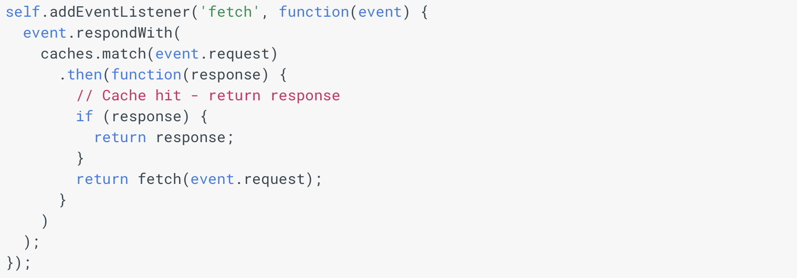

Register Worker
Add this script in your html to register a service worker. Make sure you create a service worker file in your root directory since it has control only on the defined path and sub directories
Install Worker

Once you register, add these lines in service worker file you created to install a worker which caches the necessary files provided with a cache name
Return requests
After installation, create a method to return requests when user refreshes or navigates within the application
Update worker
Automatically update service workers with this script when there is a change which deletes the old cache files
Inorder to test this page offline, please open developer tools in chrome and navigate to application tab
- Click the Service workers in left pane and look for sw.js with status active and running (Offline checkbox should be unchecked)
- Check the Offline checkbox
- Refresh the page and you will be still seeing the webpage!!
Webpage is served from cache, checkout Cache storage tab in left pane to see the cache file